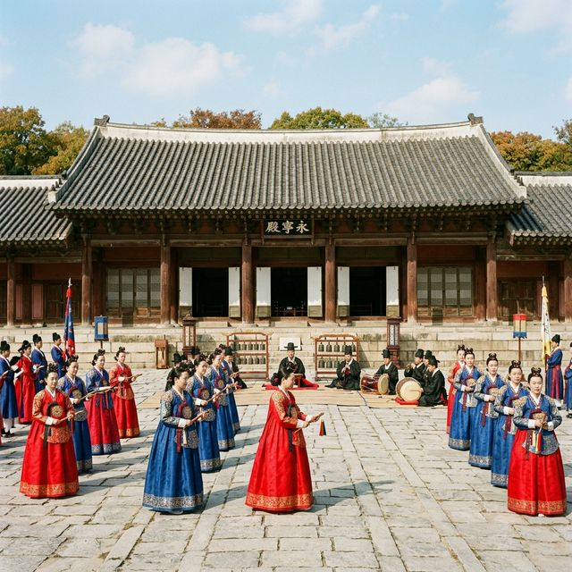
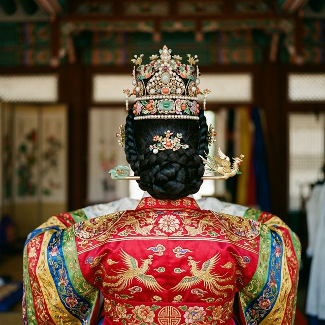
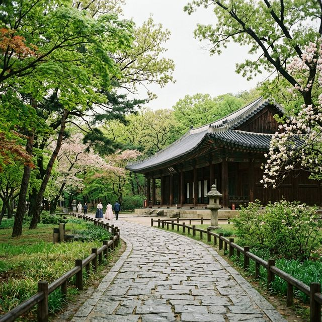

서울 종묘 묘현례 2026 관람 가이드 — 조선 왕실의 유일한 여성 의례, 4월 25일 야간 특별 관람 예약 팁
시간이 멈춘 고요한 숲, 종묘의 봄밤이 왕실의 위엄으로 피어납니다. 오는 2026년 4월 25일부터 27일까지 사흘간, 유네스코 세계문화유산인 종묘에서 조선 시대 왕실
여성이 참여하는 유일한 의례인 '묘현례'가 봉행됩니다. 숙종 대 인원왕후의 기록을 바탕으로 재현되는 이번 행사는 격조 높은 국악 뮤지컬과 함께 조선 왕실의 복식미를 가장
가까이서 감상할 수 있는 기회입니다. 종묘 영녕전의 장엄한 분위기 속에서 펼쳐질 묘현례의 상세 일정과 예약 비법을 전해 드립니다.
1. 묘현례(廟見禮)란 무엇인가? 그 역사적 의미
묘현례는 조선 시대 왕비나 세자빈이 혼례를 마친 후, 종묘를 찾아 조상들에게 인사를 올리는 국가 의례입니다. 유교적 국가 체제였던 조선에서 왕실 여성이 공식적으로 종묘에 입장할
수 있었던 드문 기회였기에 그 상징성이 매우 큽니다.
특히 이번 2026년 행사는 숙종의 세 번째 왕비인 인원왕후의 묘현례를 모티브로 구성되었습니다. 왕비로 책봉된 후 국왕과 함께 선대 왕들의 신주가 모셔진 영녕전을 참배하는 과정을
세밀하게 복원했습니다. 이는 단순한 제례를 넘어, 새로운 왕실 가족의 탄생을 조상과 백성에게 알리는 성스러운 통과 의례였다는 점에서 역사적 가치가 높습니다.

종묘 영녕전 앞뜰에서 상궁과 나인들의 호위를 받으며 행렬하는 왕비의 모습 재현 / AI 제작 이미지
2. 2026년 묘현례 상세 일정 및 장소 정보
ECA 2026과 같은 기간인 2026년 4월 25일(토)부터 4월 27일(월)까지 3일간 행사가 진행됩니다. 주 장소는 종묘의 별전인
영녕전(永寧殿)입니다. 정전보다 규모는 작지만 좌우로 길게 뻗은 독특한 건축미를 자랑하는 영녕전은 묘현례의 정적인 아름다움을 극대화하는 최적의 무대입니다.
주요 행사 중 창작 뮤지컬 형식의 공연은 오후 1시와 4시, 하루 두 번 진행됩니다. 약 60분간 진행되는 공연은 종묘의 역사와 조선 왕실의 삶을 서사적으로 풀어내어 관람객들에게 깊은 감동을 선사합니다.
400여 년 전의 건축물 안에서 현대적인 감각으로 재구성된 왕실의 기록을 마주하는 것은 4월 서울 여행의 하이라이트가 될 것입니다.
3. 창작 뮤지컬 <묘현, 왕후의 기록> 관람 포인트
이번 묘현례의 핵심은 단연 창작 뮤지컬 <묘현, 왕후의 기록>입니다. 가상의 인물이 아닌 실존했던 인원왕후의 시점에서 전개되는 이 극은, 엄격한 법도 속에서도 인간적인 고뇌와
책임감을 느꼈던 조선 왕비들의 내면을 섬세하게 묘사합니다.
공연은 영녕전의 긴 회랑을 무대로 사용하여 관람객들과 선수들이 호흡할 수 있도록 배치되었습니다. 전통 국악의 선율 위에 현대적인 연출이 더해져 자칫 어렵게 느껴질 수 있는 종묘의 제례 문화를 흥미롭게
전달합니다. 특히 왕비와 세자빈의 대례복(적의)이 햇빛에 반사되어 빛나는 모습은 이 공연에서만 볼 수 있는 시각적 정수입니다.
4. 예매 성공 전략: 티켓링크 사전 예약 및 현장 접수
묘현례 공연 관람은 무료지만, 쾌적한 관람 환경을 위해 사전 예약제로 운영됩니다. 2026년 예매는 4월 초순부터 티켓링크를 통해 시작될
예정입니다. 온라인 예약은 1인당 최대 2매까지만 신청이 가능하며, 매년 예매 시작과 동시에 매진되는 사례가 많으므로 사전에 회원 가입과 본인 인증을 마쳐야 합니다.
인터넷 사용이 어려운 분들을 위해 전화 예매(1588-7890)도 병행되지만, 수량이 한정적이니 서두르시는 것이 좋습니다. 만약 온라인 예매에 실패했다면, 행사 당일 영녕전 현장에서 운영되는
현장 접수분(회당 약 20~30석)을 노려볼 수 있습니다. 현장 접수는 공연 시작 1시간 전부터 선착순으로 진행되니 오전에 일찍 종묘에 입장하시길 추천합니다.

묘현례 의례에 사용되는 화려한 적의와 장신구 등 조선 왕실 여인의 대례복 디테일 / AI 제작 이미지
5. 체험 프로그램: 세자·세자빈이 되어 사진 찍기
공연 관람 외에도 직접 체험할 수 있는 프로그램이 영녕전 악공청에서 운영됩니다.
<세자·세자순이 되어 사진 찍기>
체험은 실제 고증된 왕실 복식을 갖춰 입고 종묘의 고즈넉한 풍경을 배경으로 기념 촬영을 할 수 있는 인기 코너입니다.
이 체험은 별도의 사전 예약 없이 현장 접수로만 진행되며, 오전 11시부터 오후 5시까지 운영됩니다. 다만 체험 의상의 수량과 시간이 정해져 있어 대기 시간이 발생할 수 있으니 공연 관람 전후로 미리 줄을
서는 것이 요령입니다. 왕실 여인들의 정교한 가체와 화려한 비단옷을 직접 입어보는 경험은 SNS 인생샷은 물론 평생 잊지 못할 추억을 남겨줄 것입니다.
6. 종묘 영녕전의 건축미와 관람 팁
묘현례가 열리는 영녕전은 태조의 4대조를 비롯하여 정전에 모시지 못한 왕과 왕비들의 신주를 모신 곳입니다. 정전보다 지붕의 높낮이가 리듬감 있게 변화하는 것이 특징이며, 사방이
숲으로 둘러싸여 있어 종묘 특유의 '신성함'이 가장 잘 느껴지는 장소입니다.
행사 관람 시 주의할 점은 종묘 전체가 국가의 사당이므로 경건한 태도를 유지해야 한다는 것입니다. 박수갈채나 환호보다는 조용한 집중이 권장되며, 행사장 내부로의 음식물 반입이나
삼각대 사용은 제한됩니다. 또한 종묘 입장료(성인 1,000원)는 별도로 결제해야 하며, 만 24세 이하 청년이나 65세 이상 어르신은 무료 입장이 가능하니 신분증 지참을 잊지 마세요.
7. 종묘주간 연계 행사: 야간 공연과 대제
묘현례는 4월 말부터 5월 초까지 이어지는 '종묘주간'의 서막에 불과합니다. 묘현례가 끝난 직후인 4월 28일부터 30일까지는 유네스코 인류무형문화유산인 종묘제례악
야간 공연이 정전에서 펼쳐집니다. 밤의 정전이 내뿜는 압도적인 아우라 속에서 울려 퍼지는 제례악은 평소에는 절대 경험할 수 없는 신비로운 체험을 선사합니다.
또한 종묘주간의 대미는 5월 3일 일요일에 봉행되는 종묘대제가 장식합니다. 사직대제와 함께 조선 왕실의 가장 중요한 제사였던 종묘대제는 수백 명의 제관이 참여하는 거대한 의례로,
전 세계 유일의 보존 가치를 지닌 문화유산입니다. 묘현례를 시작으로 이어지는 이 '전통의 향연'을 통해 한국 문화의 깊은 뿌리를 확인해 보시기 바랍니다.

초록빛 신록이 우거진 종묘의 돌길과 검은 기와지붕이 어우러진 평화로운 풍경 / AI 제작 이미지
8. 종묘 관람 시 복장 및 유의사항
종묘는 신이 거니는 길이라 불리는 '신로'가 정문부터 각 전각까지 이어져 있습니다. 돌로 높게 쌓인 이 길은 조상의 신주가 지나는 길목이므로 절대 밟지 않도록 주의해야 합니다.
관람객들은 신로 좌우의 낮은 길을 이용해야 하며, 이는 종묘 예절의 기본 중의 기본입니다.
또한 자갈과 돌길이 많으므로 굽이 높은 구두보다는 편안한 운동화를 착용하는 것이 좋습니다. 4월의 종묘는 그늘이 많지 않아 양순이나 모자를 챙기면 관람이 수월합니다. 행사가
열리는 영녕전 주변은 정숙 구역이므로 휴대전화는 무음으로 설정하고, 아이들이 뛰놀지 않도록 세심한 지도가 필요합니다. 전통을 존중하는 배려 있는 관람 문화가 우리의 소중한 문화유산을 지키는 힘이 됩니다.
9. 주변 연계 코스: 서순라길과 익선동 산책
종묘 관람 후에는 담장 옆으로 길게 이어진 서순라길을 따라 걷는 것을 추천합니다. 최근 SNS에서 가장 핫한 골목 중 하나인 이곳은 낮은 돌담 너머로 종묘의 숲을 바라보며 조용한
카페와 보틀샵을 즐길 수 있습니다. 묘현례의 긴 여운을 차 한 잔과 함께 정리하기에 더없이 좋은 공간입니다.
조금 더 활기찬 분위기를 원한다면 길 건너 익선동 한옥마을로 발걸음을 옮겨보세요. 아기자기하게 개조된 한옥들 사이로 펼쳐지는 다양한 미식의 향연은 여행의 즐거움을 더해줍니다.
전통의 종묘와 현대적 감각의 익선동이 만나는 이 루트는 서울의 과거와 현재를 하룻밤 사이에 모두 경험할 수 있는 최고의 '타임슬립' 코스가 될 것입니다.
#종묘묘현례
#종묘야간관람
#궁중문화축전
#인원왕후
#조선왕실문화
#서울4월축제
#티켓링크예매
#영녕전
#서순라길데이트
#종묘대제